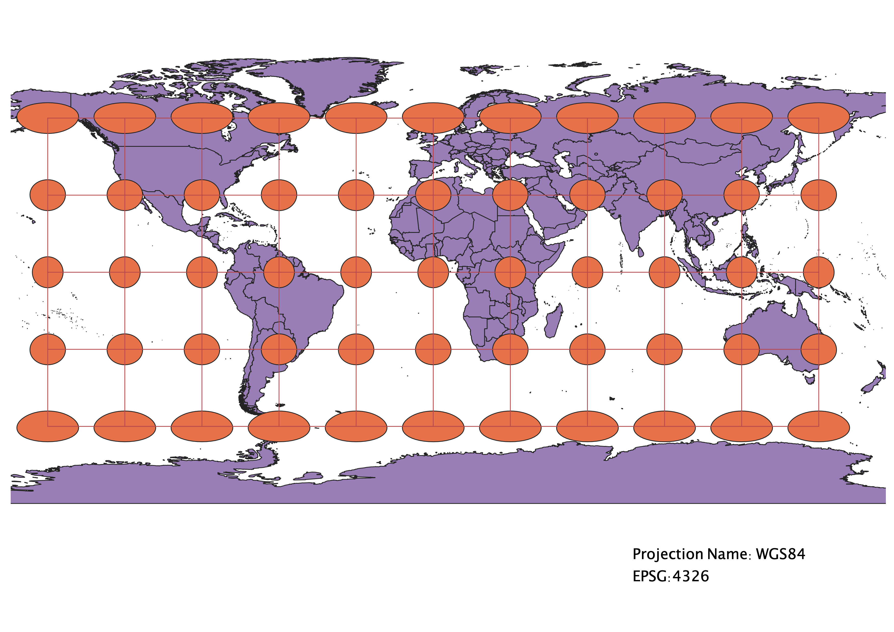

Homework 3
In this project I learned how to create maps in different projections
I used QGIS to add a map in a new project, and then used the Indicatrix Mapper to add the circles and grid that show how the projection changes shape, size, and direction. I clicked on EPSG and searched different projections to display on the map.
WGS84 Projection
Obesrvations:

Aitoff Projection
Observations:

Pseudo Mercator Projection
Observations:
Sphere Winkel I
Observations:

World Equidistant Conic Projection
Observations:

World Cylindrical Equal Area Projection
Observations:
World Craster Parabolic Projection
Observations:

World Goode Homosoline Land Projection
Observations:

North Pole Azimuthal Equidistant Projection
Observations: